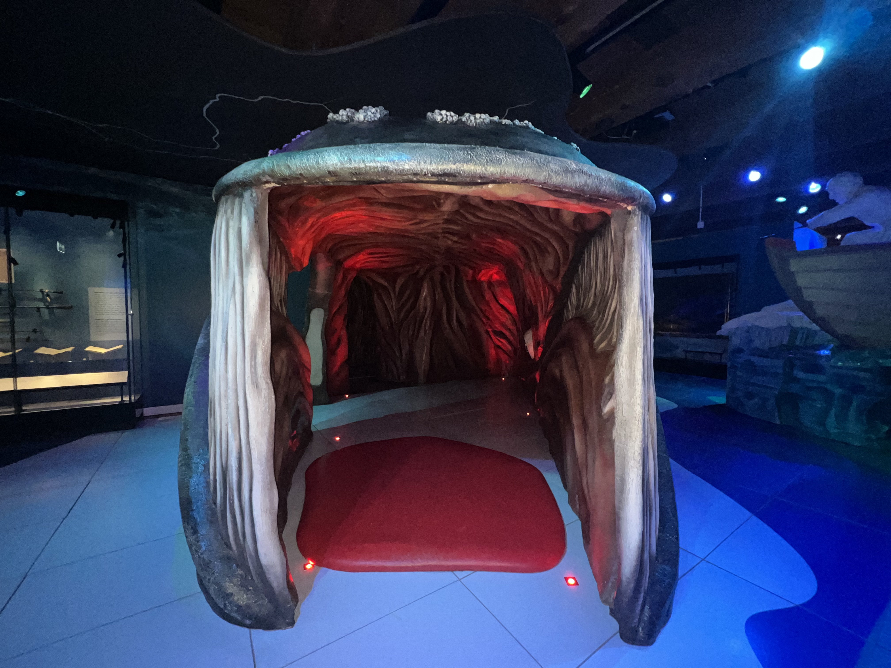
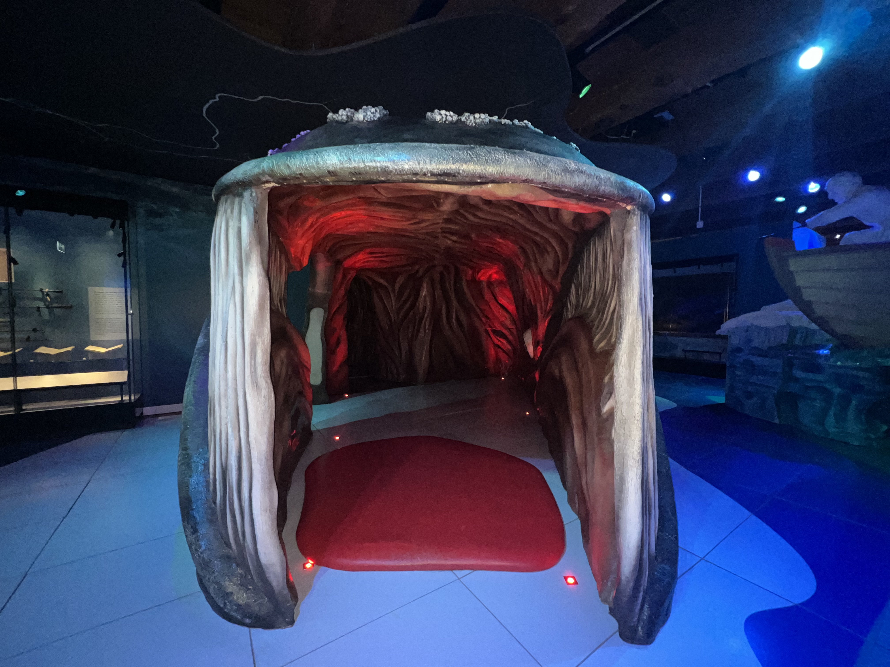

Het Scheepvaartmuseum is gevestigd in 's Lands Zeemagazijn. Dit monumentale gebouw uit 1656 werd ontworpen door Daniel Stalpaert als pakhuis van de Admiraliteit van Amsterdam. Het Zeemagazijn werd gebouwd toen Amsterdam de grootste haven ter wereld was. Nu, ruim 350 jaar later, is het Zeemagazijn nog altijd een indrukwekkend gebouw met veel karakter. De perfecte locatie voor Het Scheepvaartmuseum, dat hier sinds 1973 is gevestigd.